Within-seed evaluation counts 1–1,200. Fitness = validation accuracy / validation loss.
Dots and thin lines show observations; dashed steps show the best value so far. Unobserved seeds have no curve. Each evaluation trains a fresh model.
(erf(x)*sigmoid(sinh(x)))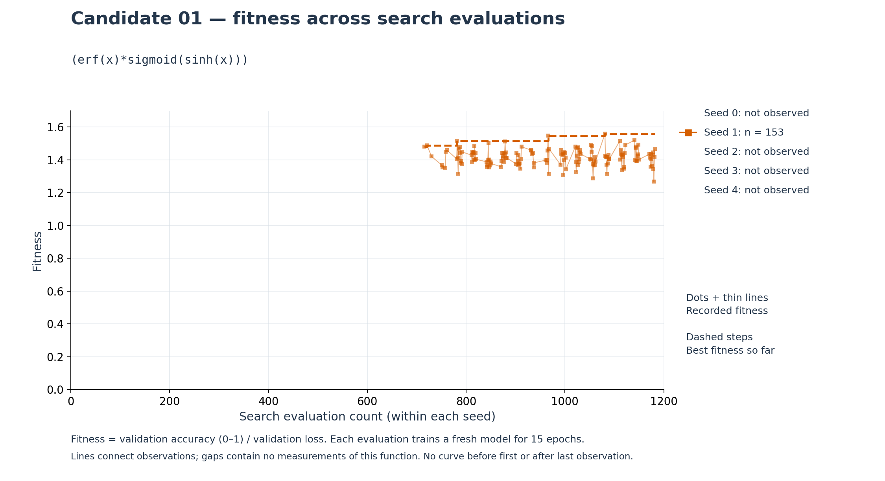
(sigmoid(x)*erf(erf(x)))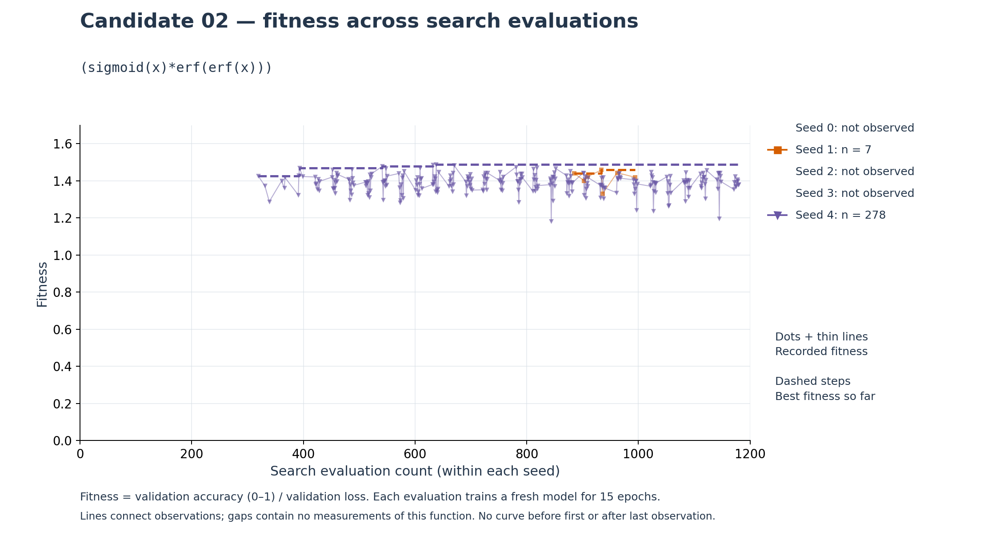
(atan(x)*sigmoid(sinh(x)))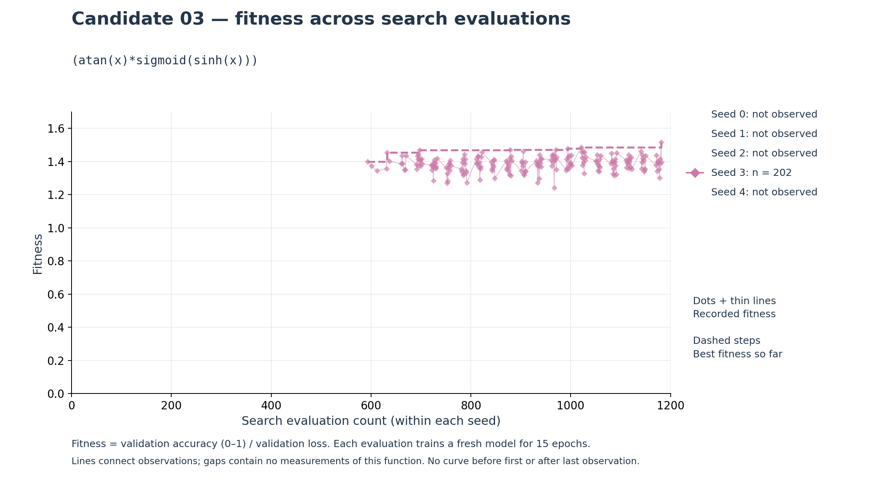
(asinh(x)*sigmoid(sinh(x)))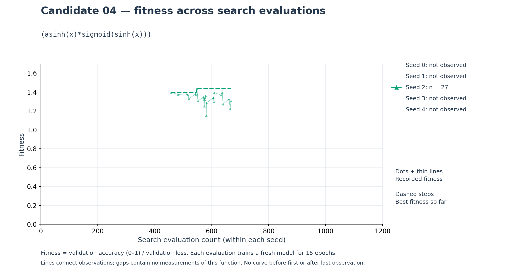
(sigmoid(x)*erf(sin(x)))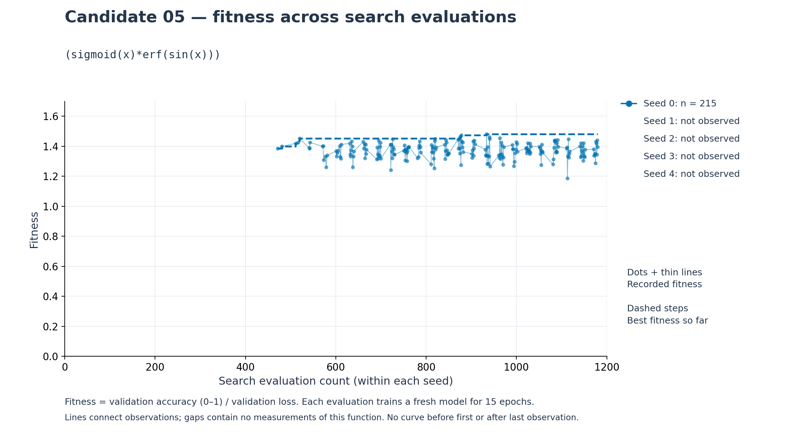
(asinh(x)*sigmoid(x))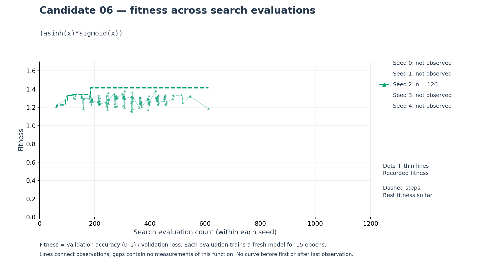
(sigmoid(x)*erf(x))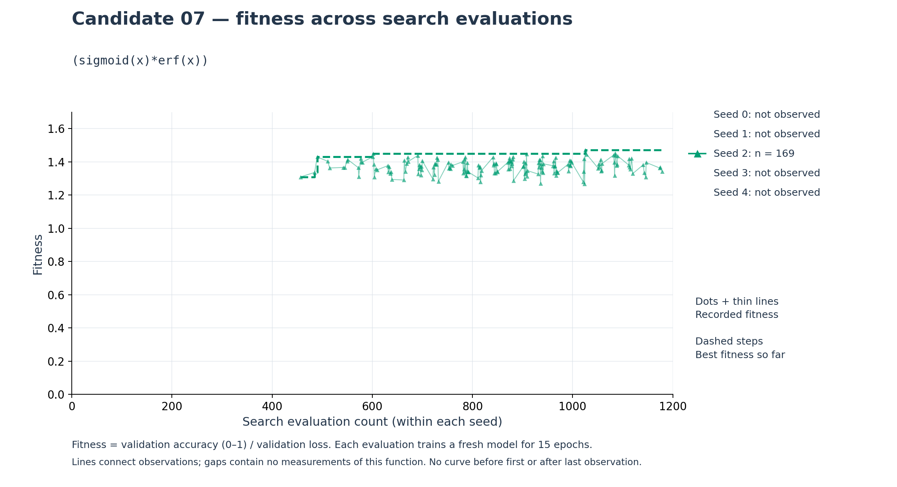
(sigmoid(x)*erf(sinh(x)))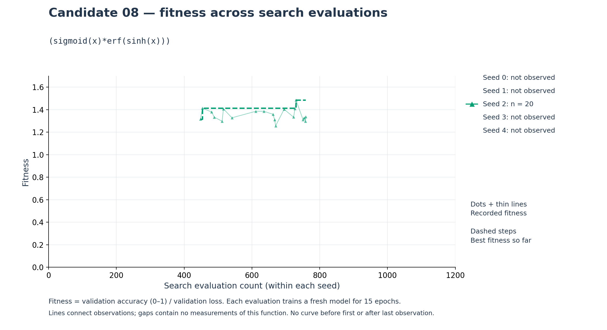
max(min((exp(x)*erf(tanh(x))),0),(x*sigmoid(max(x,0))))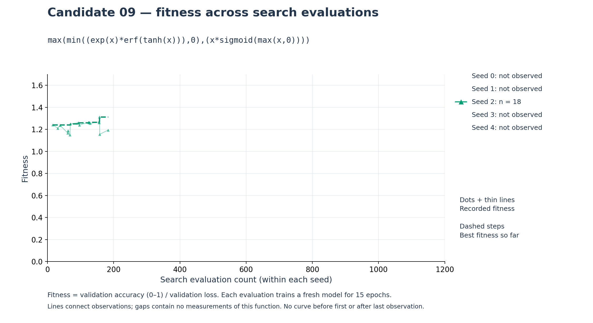
(erf(x)*sigmoid(x))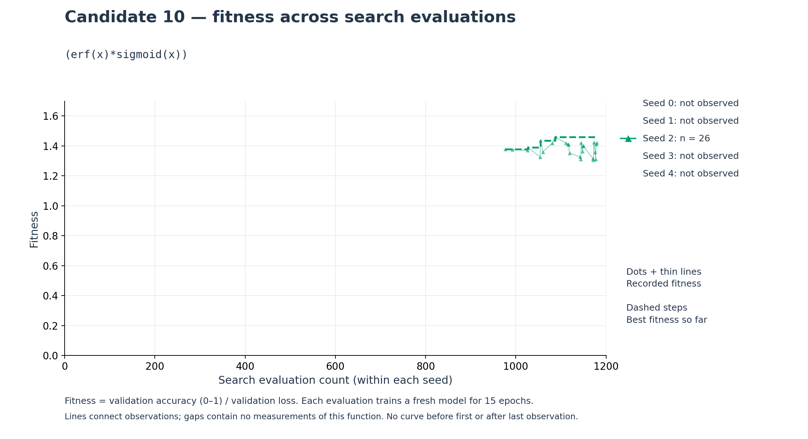
max(min((log(1+exp(x))*erf(x)),0),min(tanh(x),sin(x)))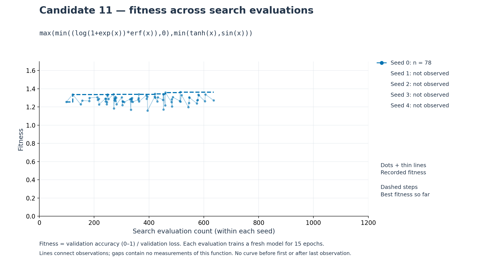
(max(min(sin(x),0),x)*erf(sigmoid(x)))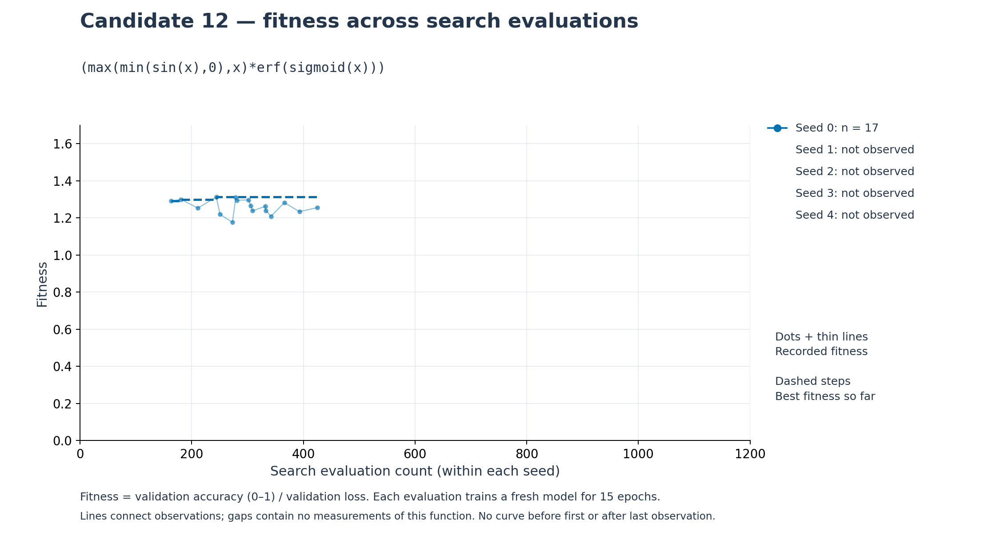
((atan(x)*min(x,0))+tanh(x))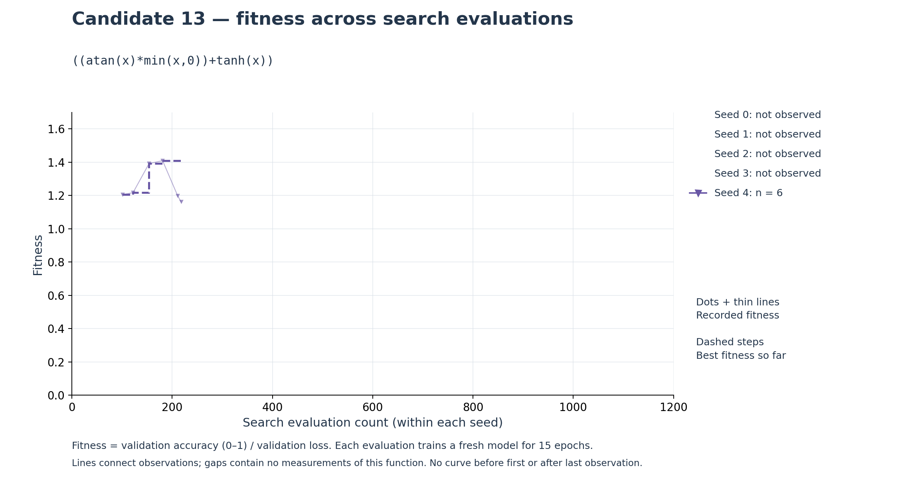
min((log(1+exp(x))*erf(x)),(atan(x)*erf(atan(x))))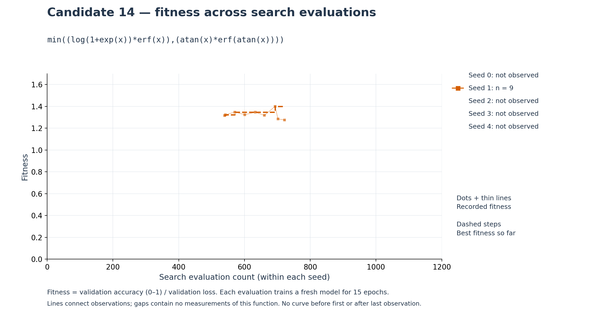
(sin(x)*sigmoid(asinh(x)))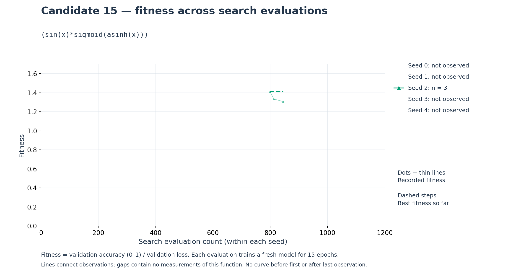